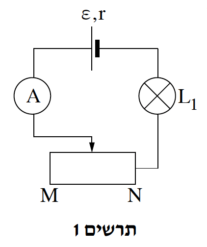
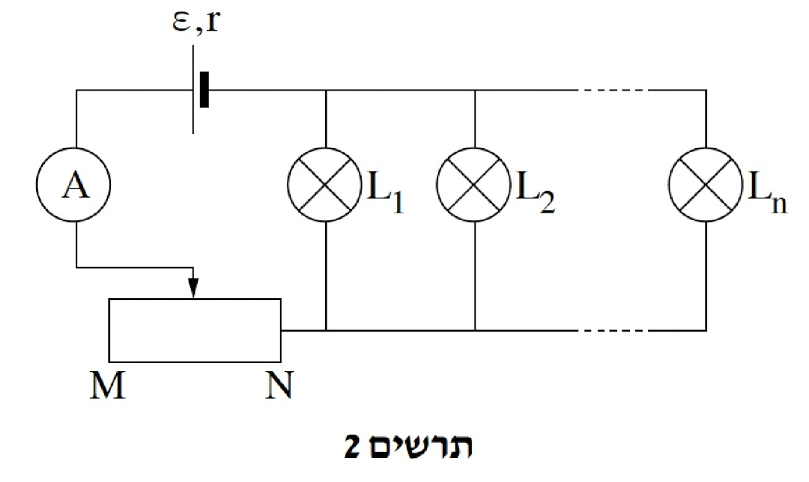

שאלה 3
נתנו לקבוצה של תלמידים כמה רכיבים חשמליים: נורה L1 שעליה מצוין 18V ו-27W, אמפרמטר אידיאלי A, נגד משתנה MN, מקור מתח א' שהכא"מ שלו ε1 = 30V והתנגדותו הפנימית r1 = 2Ω, מקור מתח ב' שהכא"מ שלו ε2 = 32V והתנגדותו הפנימית r2 = 10Ω ותילים מוליכים אידיאליים.
הטילו על התלמידים מטלה לבנות את המעגל החשמלי המוצג בתרשים 1 שלפניכם, ולהזיז את הגררה של הנגד המשתנה לנקודה שבה הנורה תאיר באורה המלא, בהתאם למצוין עליה. לא אמרו לתלמידים באיזה משני מקורות המתח עליהם לבחור - בחירה זו הייתה חלק מן המטלה.

חשבו את הוריית האמפרמטר במצב שבו הנורה מאירה באורה המלא. (4 נקודות)
התלמידים הרכיבו את המעגל עם מקור המתח א' (ε1,r1).
הוכיחו כי אי אפשר לבצע את המטלה עם מקור המתח ב' (ε2,r2). (6 נקודות)
חשבו את ההתנגדות של הנגד המשתנה במצב שבו הנורה מאירה באורה המלא. (6 נקודות)
בלי לשנות את מיקום הגררה של הנגד המשתנה, התלמידים חיברו במקביל לנורה L1
עוד כמה נורות (ראה תרשים 2). נתון כי כל הנורות זהות לנורה L1.

קבעו לאיזה כיוון (לעבר N או לעבר M) יש להזיז את הגררה כך שכל הנורות יאירו באורן המלא. נמקו את קביעתכם במילים. (6 נקודות)
חשבו את המספר המרבי, n, של נורות שאפשר לחבר במקביל כך שכולן יאירו באורן המלא. (6 נקודות)
בסעיף ו שלפניכם מוגדר ההספק המנוצל - ההספק הכולל שכל הנורות צורכות.
במצב שבו כל הנורות מאירות באורן המלא, קבעו אם הנצילות של המעגל המתואר בתרשים 2 גדולה מנצילות המעגל כאשר פועלת בו נורה יחידה, קטנה ממנה או שווה לה. נמקו את קביעתכם. (5 1/3 נקודות)